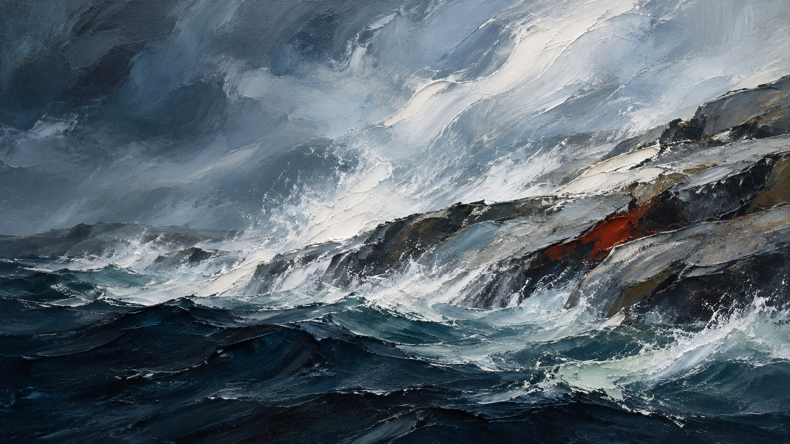
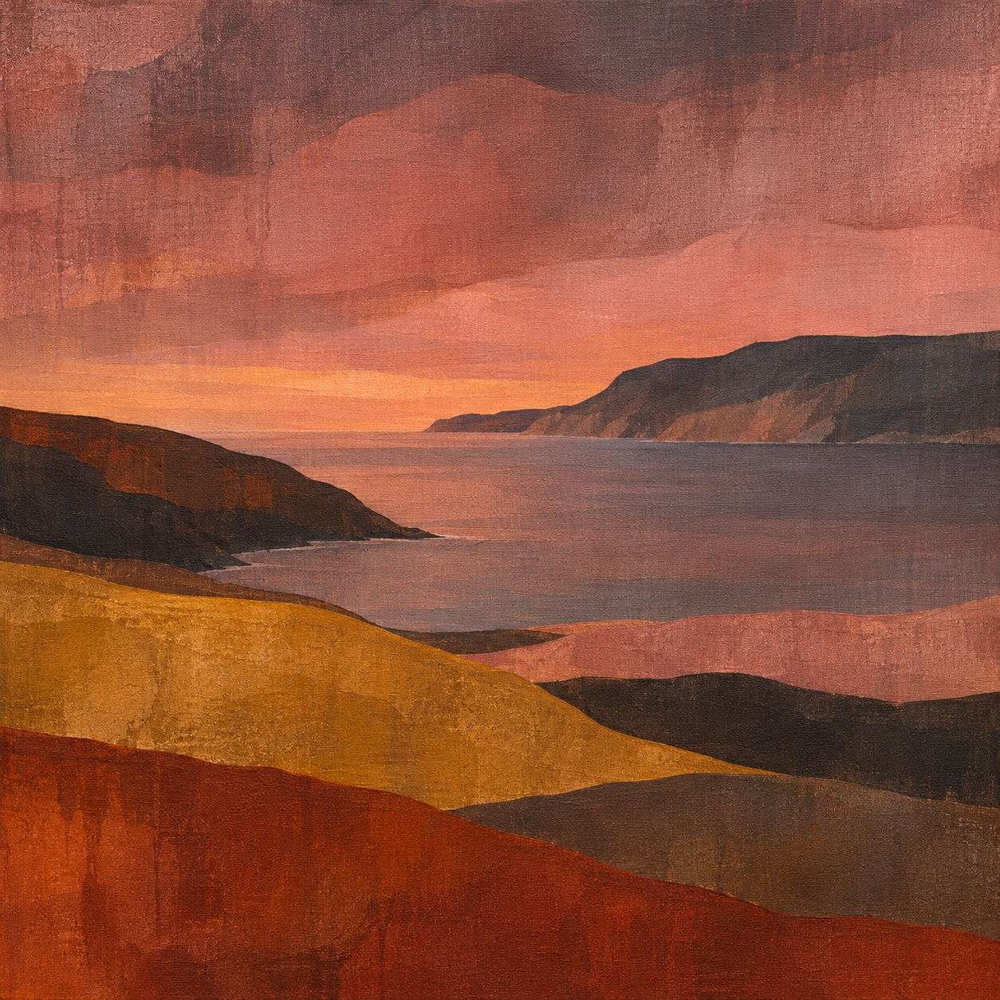

Salt Memory
Rowan Mercer · Oil on canvas
Independent contemporary gallery
Paintings and objects shaped by coastal places, changing light, and the materials artists live with.
Explore the collection
The collection
Rowan Mercer · Oil on canvas
Mara Vale · Stoneware

Iona Bell · Acrylic on canvas
Visit the gallery
Sill Gallery is a fictional independent gallery set in St. John’s, Newfoundland. The artists, artwork and visiting details are examples for this starter site.
Example hours
Thursday–Sunday, noon–5 p.m.